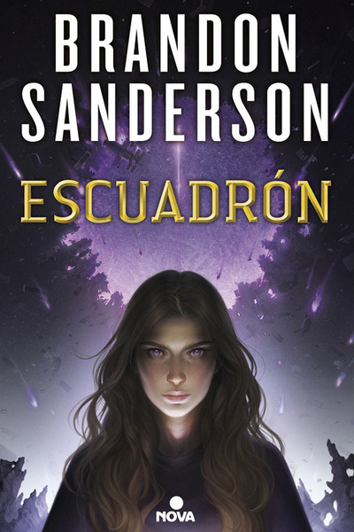
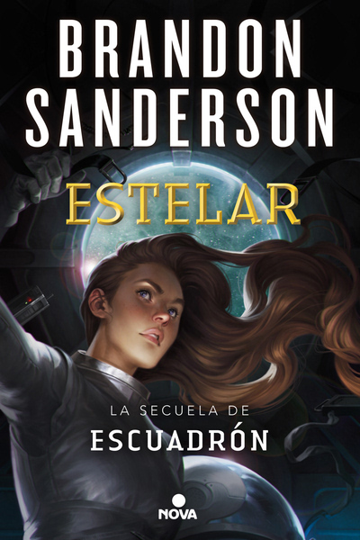
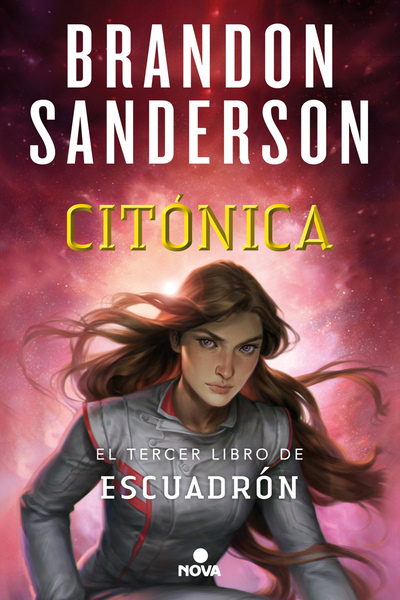
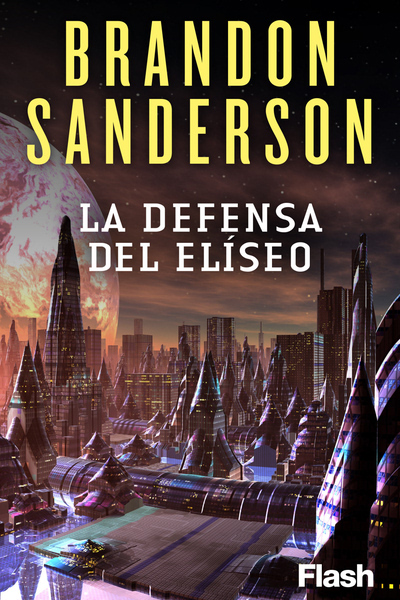

- 
- 
- 
- 
El mundo lleva siglos en guerra; la humanidad está atrapada en un planeta constantemente atacado por unos alienígenas decididos a destruirla. Los pilotos son los únicos héroes dispuestos a combatir al enemigo. Spensa es una joven que siempre ha soñado con convertirse en piloto y defender a la Tierra. Pero su destino se cruza con el de su padre, un piloto que fue asesinado tras abandonar a su equipo, anulando sus opciones de asistir a la escuela de vuelo. De pronto, el ataque alienígena ha hecho duplicar la flota aérea de los humanos, facilitando que Spensa ahora sí pueda volar al espacio...
La continuación de Escuadrón, la nueva saga épica de Brandon Sanderson. Este es el segundo libro de una serie épica sobre una chica que guarda un secreto en un peligroso mundo en guerra por el futuro de la humanidad. En él continúan las aventuras de Spensa Nightshade, la joven piloto que ha conseguido un puesto en el escuadrón de defensa de la humanidad contra los ataques alienígenas.
La esperada continuación de Escuadrón y Estelar, la épica saga de Brandon Sanderson sobre una chica que viaja más allá de las estrellas para salvar el mundo que ama de la destrucción. La vida de Spensa como miembro de la Fuerza de Defensa Desafiante dista mucho de ser normal y corriente. Demostró ser una de las mejores pilotos de caza estelar en el enclave humano de Detritus y salvó a su pueblo del exterminio a manos de los krells, la enigmática especie alienígena que los tenía prisioneros desde hace décadas. Por si fuera poco, viajó a años-luz de distancia de su hogar como espía infiltrada en la Supremacía, a un lugar donde descubrió que había toda una galaxia más allá de su pequeño y desolado planeta natal.
Ambientado en el mismo universo que la serie Escuadrón, La defensa del Elíseo tiene lugar siglos antes de sus acontecimientos. Ganador del premio UPC de Ciencia Ficción Apareció en la revista Asimov's Science Fiction «Le vino una imagen a la mente, la imagen de la humanidad escapando al espacio. Una imagen de comerciantes humanos negociando y estafando, de tiranos humanos dominando a las especies tecnológicamente inferiores, los varvax, los tenasi, los hommar. Imágenes de guerras, de conflicto, de un paraíso destruido».